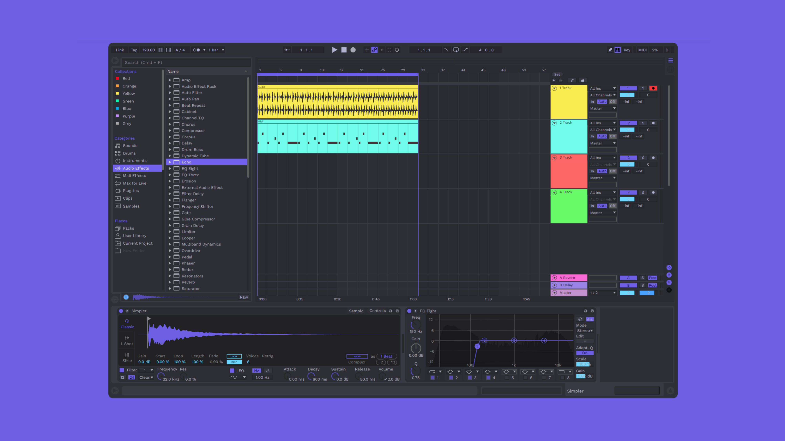

What is Live?

Live is fast, fluid and flexible software for music creation and performance. It comes with effects,
instruments, sounds and all kinds of creative features—everything you need to make any kind of music.
Create in a traditional linear arrangement, or improvise without the constraints of a timeline in Live’s
Session View. Move freely between musical elements and play with ideas, without stopping the music and
without breaking your flow.
Create with Live
Sketch, tweak and experiment
In Live’s Session View you can freely mix and match musical ideas without the constraints of a timeline. Getting ideas down is lightning fast, and it’s the ideal place for improvisation. You can play MIDI and audio loops of different lengths in any combination, without ever stopping the music.
Get into the details
The Arrangement View is where you can organize music along a timeline. Record multiple passes of an audio or
MIDI performance into individual takes. Find the best parts of each and stitch them together for the desired
final result.
Develop an initial idea or organize your parts to create the right musical flow for your track. You can also
simply record everything you do in the Session View into the Arrangement to improvise your way to a finished
song.
Get your ideas into Live
Whatever shape inspiration takes, Live gives you the means to seize it. Record hardware synths, software plugins, drum machines, guitars or any audio from the real world. You can now use Capture MIDI to record notes after you’ve played them, turning your most spontaneous ideas (and accidents) into music. And there’s Live’s audio-to-MIDI features, which let you turn drum breaks, and melody or harmony parts into MIDI patterns that you can edit and reuse with your own sounds.
Use any sounds, at any tempo
One of the things that makes creating with Live so fluid is the ability to change the tempo and timing of any audio, in real-time, without stopping the music. We call this warping. Use warping to mix and match loops from a variety of tempos, fix timing errors in recorded performances, or radically reshape any audio into new sound design directions.
Build your sound with Live's instruments
Live's native devices are the foundation of sound design in Live, including wavetable, FM and physical modeling synthesis. Flexible synthesis architectures with intuitive interfaces make deep programming more accessible. And you get more out of your samples with Live’s pair of sampling instruments, thanks to built-in slicing and warping capabilities, multisampled playback and much more.
Effects for shaping ideas, designing sounds and finishing music
Live comes with the devices you need for sparking ideas and shaping your sound. Use Live’s MIDI effects for creative manipulation of your compositions. Or use Live’s audio effects to get the sound you’re looking for: clean up your mix with precision tools, or make a creative mess with analog-modeled noise, distortion and saturation.
Sound selections
The sounds for making any kind of music are part of Live. The Core Library—included with all editions of Live—comes with rich collections of vintage synths, analog drum machines, multi-sampled drums, electric pianos and other acoustic instruments. Plus there are Curated Collections, toolkits of curated sounds from selected scenes—Instrument Racks, clips and samples, designed to be molded and shaped into something new.